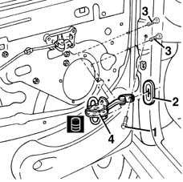

7005A28 front side door limiter- repair or replace
- Path
- Procedures > 70 FITTINGS > 7005 PASSENGER COMPARTMENT FRONT SIDE DOORS > 7005A front side door assembly > 7005A28 front side door limiter- repair or replace
- Kind
- repair procedure (removal / refitting; the operation number is the code)
- Applies to
- all engines; all production periods
- Interactive page
- https://sloeber94.github.io/elrnDB-fMltpl/en/#/2892012
Applies to: all engines; all production periods
 Removing
Removing
 Refitting
Refitting7005M10 driver's side front side door glass control switch (one) r r
7005C53 interior opening handle - r r
7005E22 l/h or r/h front door panel radio grille (one) - r+r
7005E38 front side door interior handle-r r
7005C62 front side door safety catch knob and seal r r
7005E34 internal or external panel on front side door frame r r
7005E10 front side door inner panel - r r for replacement
7005A04 front side door water guard protection - r r or replace with door panel removed
1. Undo the bolt securing the door check strap to the body.
2. Remove the seal.
3. Unscrew the bolts securing the check strap to the door.
4. Remove the door check strap.

Applies to: all engines; all production periods
Refitting
RemovingCheck that the check strap and seal are not damaged.
Fit the check strap in its seat.
Tighten the bolts securing the check strap to the door.
 | Fastening | Component | Ø | Value (daNm) |
|---|---|---|---|---|
- | Bolt | FRONT DOOR OPENING LIMITER | M8 | 0.8 - 1.2 |
Fit the seal.
Tighten the bolt securing the check strap to the body.
| Fastening | Component | Ø | Value (daNm) |
|---|---|---|---|---|
- | Bolt | FRONT DOOR OPENING LIMITER | M8 | 2.2 - 2.7 |
Lubricate the check strap with the specified product.
 | Type | Component | Name | Qty. |
|---|---|---|---|---|
- | Grease | FRONT DOOR OPENING LIMITER | MR2/CX FIAT | - |
7005A04 front side door water guard protection - r r or replace with door panel removed
7005E10 front side door inner panel - r r for replacement
7005E34 internal or external panel on front side door frame r r
7005C62 front side door safety catch knob and seal r r
7005E38 front side door interior handle-r r
7005E22 l/h or r/h front door panel radio grille (one) - r+r
7005C53 interior opening handle - r r
7005M10 driver's side front side door glass control switch (one) r r
Topics linked from this page (9)
- 5570T90 front speaker - r r
- 7005A04 front side door water guard protection - r r or replace with door panel removed
- 7005C53 interior opening handle - r r
- 7005C62 front side door safety catch knob and seal r r
- 7005E10 front side door inner panel - r r for replacement
- 7005E22 l/h or r/h front door panel radio grille (one) - r+r
- 7005E34 internal or external panel on front side door frame r r
- 7005E38 front side door interior handle-r r
- 7005M10 driver's side front side door glass control switch (one) r r